Nand2Tetris 課程筆記
Table of Contents
Unit 0
0.0: Introduction
網址: https://www.coursera.org/learn/build-a-computer/lecture/tfRns/unit-0-0-introduction
介紹整個課程的 roadmap
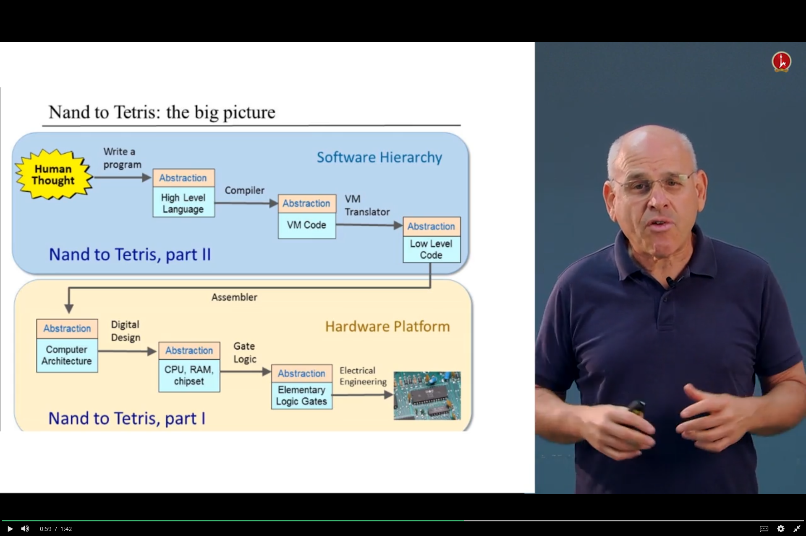
這個課程將講解怎樣從硬體到軟體建造一台電腦，整個課程分成兩個部份:
- part I 講的是怎樣打造一個名為 HACK 的 CPU。
- part II 則是教如何在這個打造出來的硬體環境上面建制軟體環境。
0.1: The Road Ahead
網址: https://www.coursera.org/learn/build-a-computer/lecture/gd00Q/unit-0-1-the-road-ahead
大家在學程式語言時候一開始都會有一個 Hello World 程式，大概會長這樣子
Class Main { function void main() { do Output.printString("Hello World!"); do Output.println(); // New line return; } }
而這個程式會在螢幕上面印出 "Hello World!" 字串。
接下來一樣在介紹 roadmap。
這個課程將教你怎樣從一個最基本的 NAND 邏輯閘開始，慢慢理解如何打造初一可以跑俄羅斯方塊的電腦。
這課程將分兩個個部份:
Part I, 也就是當下的課程，將會花費 7 周在硬體上面，我們將從 NAND 邏輯閘開始，建立一個名為 HACK 的電腦。
Part II 則是另外一個課程，將會從我們打造的 HACK 電腦開始，學習如何編寫 組譯器 (assembler) , 以及編譯器 (compiler), 然後可以寫我們自己的軟體, 比如跑一個俄羅斯方塊 (Tetris) 在這個 HACK 電腦上。
這個課程也有對應的課本，如果你有興趣可以去找:
The Elements of Computing SYstems: Building a Modrn Computer from Frist Principles
0.2: From Nand to Hack
網址: https://www.coursera.org/learn/build-a-computer/lecture/Y1MVe/unit-0-2-from-nand-to-hack
在這個課程我們將講如何做出一個名為 Hack 的電腦，你可以將其接上螢幕和鍵盤，並搭配你寫的程式去執行它。
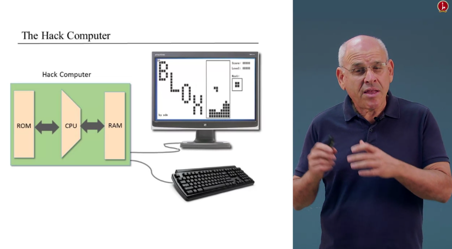
整個流程如下:
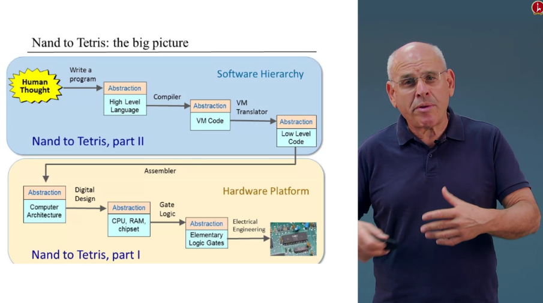
然而，就如同前面講的，我們會將這個課程分成兩個部份， Part I 就是在著重於這個部份。
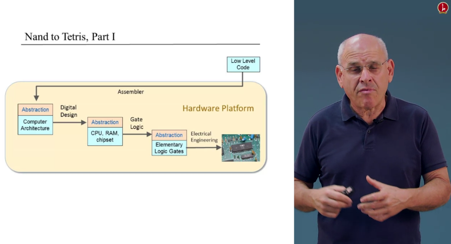
我們將從數位電路構成最基本的 NAND 邏輯閘開始來組成 組合邏輯(Combinational logic) 和循序邏輯 (Seuential logic) 開始，來組出我們的 Hack 電腦。
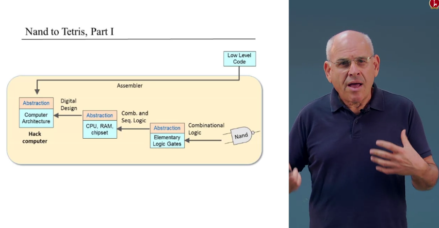
那到底要怎樣做出一個晶片呢? 現代的工程師都是透過硬體模擬器來驗證他們的想法，在這個課程中我們也會有一個課程專用的硬體模擬器以及課程專用的硬體描述語言。
我們將會先學會畫出 chip diagram, 然後將其轉成硬體描述語言，然後在硬體模擬器上面去模擬。
0.3: From Hack to Tetris
在這課程的第一個部份我們將從 NAND Gate 開始，然後學習 HACK CPU 的組合語言並將其編譯程 binary 檔案來執行。
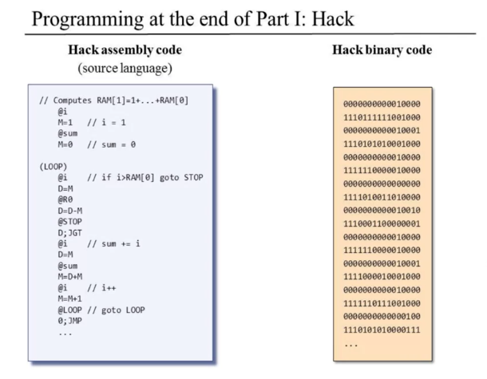
實際上現代開發大部分都是用像以下這樣的高階程式語言
Class Main { function void main() { do Output.printString("Hello World!"); do Output.println() return; } }
這部份我們將在 part II 將會開發一個名為 Jack 的高階語言，以及需要的函式庫和作業系統。
如果你等不急這個課程，可以去看這課程的實體書教材:
The Elements of Computing SYstems: Building a Modrn Computer from Frist Principles
0.4: Project 0 Overview
這課程將講你針對第一個專案 (Project 0) 需要做哪些準備，首先你需要下載 Nand2Tetris 的軟體，到 https://www.nand2tetris.org/software 下載。
在我的筆記裡面，我會將其解壓縮後放到 nand2tetris 資料夾去。
比如我們要執行硬體模擬器，則可以這樣執行:
./nand2tetris/tools/HardwareSimulator.sh
整個軟體的資料夾結構是這樣，有些部份是給 Part II 課程使用的。
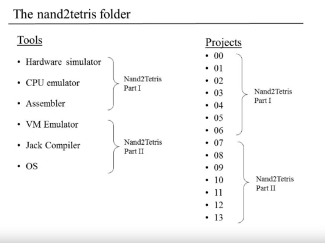
而在我們的 Project 0, 你的任務就是將 nand2tetris/projects/00/file.txt 上傳到課程網址確認你真的有下載這個軟體。
(注意: 實際上要用 zip 封裝這個 file.txt, 並命名為 project0.zip 上傳才會得分)
Unit 1
1.1: Boolean Logic
網址: https://www.coursera.org/learn/build-a-computer/lecture/BemaK/unit-1-1-boolean-logic
電腦內部只有 0 與 1,也就是個2進制系統，我們可以用 0 與 1 來做簡單的布林運算，常見的就是 AND 和 OR 以及 NOT 的運作
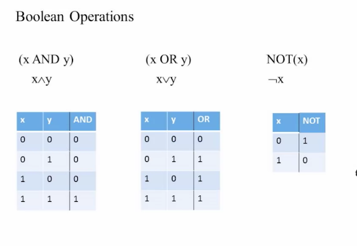
簡單來講， AND 就是 x 和 y 都要是 1 結果才是 1, 而 NAND 則是 x 和 y 只要有一個是 1, 結果就是 1。
NOT 的運作則是輸入的相反，也就是輸入是 1 的話，則輸出是 0。
當我們了解 boolean expression 後，我們就可以將其組合，比如這樣的運算 NOT (0 OR (1 AND 1)) 就可以慢慢被化簡
NOT (0 OR (1 AND 1)) = NOT (0 OR 1) = NOT (1) = 0
或是像是下面這樣的運算，我們可以建立表將所有可能的結果列出來, 而下面的表則叫做 真值表 (truth table)
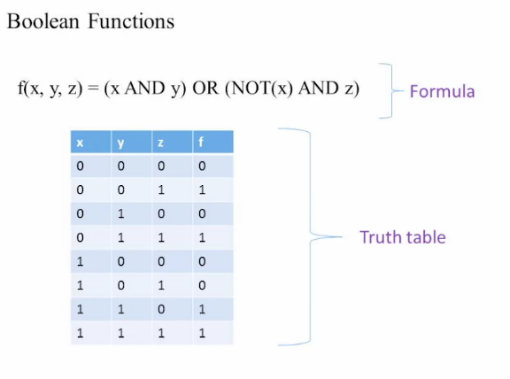
在上圖的函式我們稱為公式，而公式的化簡可以透過許多規則以及 De Morgan's law 來辦到，如下
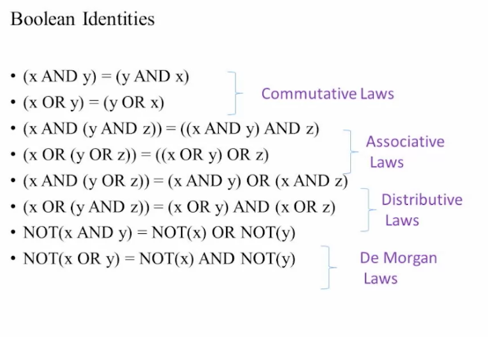
了解了這些，我們就可以用它來化簡公式，比如這樣：
NOT (NOT (x) AND NOT (x OR y)) = NOT (NOT (X) AND (NOT (x) AND NOT (y))) = ; Associative Law NOT (NOT (x) AND NOT (X) AND NOT (y)) = ; Idemoptence NOT (NOT (x) AND NOT (y)) = ; De Morgan Law NOT (NOT (x) OR NOT (NOT (y))) = ; Double Negation x OR y
而這樣的結果也可以透過真值表來觀察出來
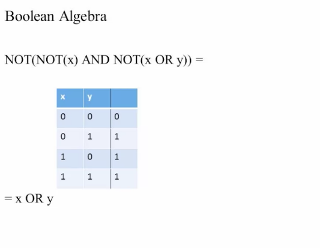
1.2: Boolean Functions Synthesis
網址: https://www.coursera.org/learn/build-a-computer/lecture/zJKs1/unit-1-2-boolean-functions-synthesis
講述如何從真值表 (truth table) 將數值轉換回公式。
基本上方法就像下面這樣，一行一行根據真值表先建立該行的公式，然後將其整合起來
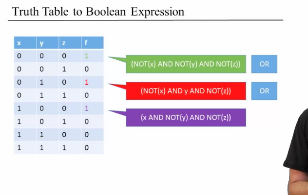
所以就可以變成這樣:
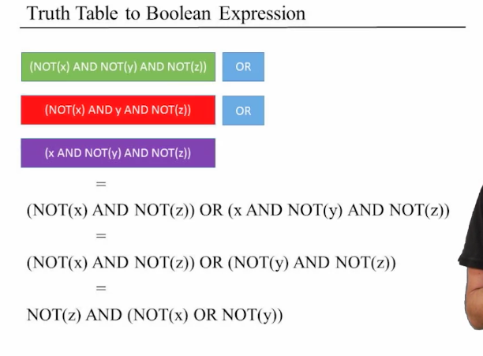
注意到任意 boolean functions 可以用 AND, OR, NOT 來表示其組合, 這邊就是證明:
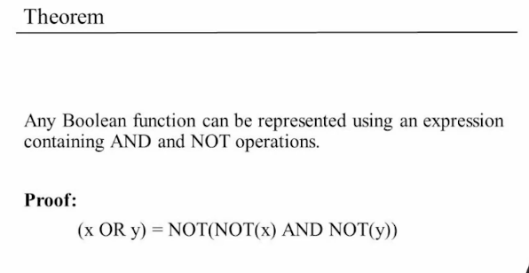
我們先來看 NAND 這個東西:
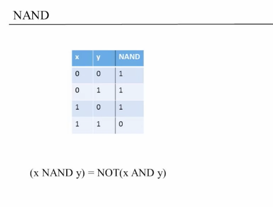
注意到如果是 NAND(x,x) 的話，則運作相當於 NOT(x), 實際上任意 boolean function 可以用 NAND 來表示，這邊有證明:
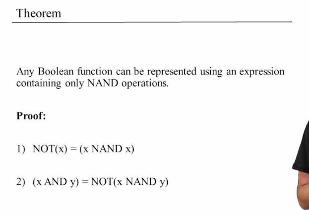
1.3: Logic Gates
網址: https://www.coursera.org/learn/build-a-computer/lecture/Aqrh6/unit-1-3-logic-gates
這個章節開始講如何實做邏輯電路 (Logic gaets)。
首先是 NAND 邏輯閘，注意道上一章節已經證明這是一個萬用邏輯閘，你可以用 NAND 去實現 NOT 或是 OR 或是 AND 邏輯。
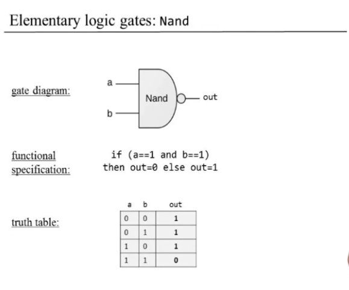
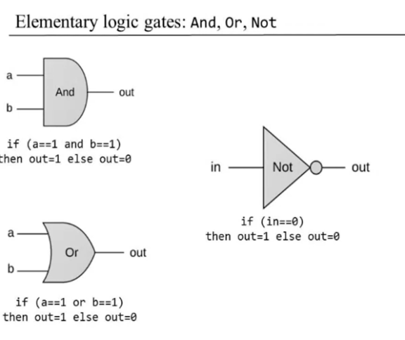
我們可以用這些邏輯閘做出更複雜的電路，比如這樣:
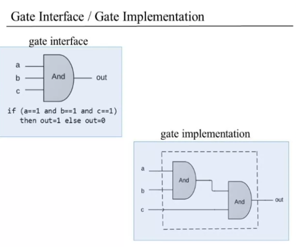
這個電路需要 a=1,b=1,c=1 的情況下，out結果才會是 1。
對於其他使用者而言，他們看到的是輸入與輸出（左上, gate interface)，而實際的實做則是隱藏起來（右下, gate impementation），像是黑盒子一樣，而這個課程就是要來實做這個黑盒子。
了解 gate interface 和 gate implementation 的概念後，我們來看看電路的實做。
比如 AND 就是串連電路，要兩個開關都打開的情況縣，電燈才會亮起來。
而 OR 就是並聯電路，只要有一個開關點下去，就可以讓電燈亮起來。
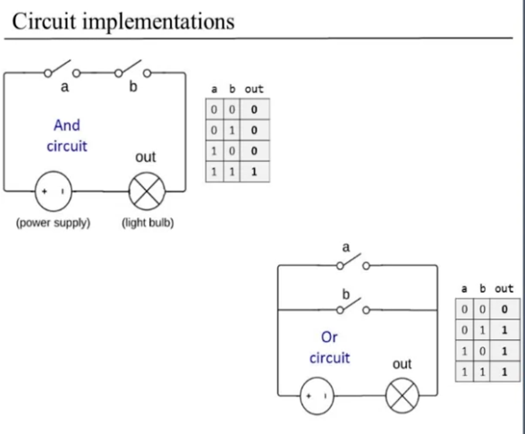
了解這個概念，我們就知道三個輸入的 AND 邏輯就像是這個樣子:
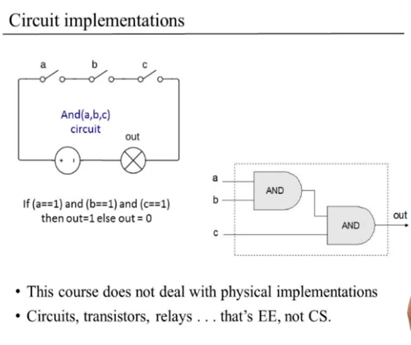
當然，由於實際上邏輯電路的 "硬體" 實做非常複雜，不在這個課程討論的範圍，有興趣的話可以去修電子學。
1.4: Hardware Description Language
網址: https://www.coursera.org/learn/build-a-computer/lecture/8VOXT/unit-1-4-hardware-description-language
這個章節要講 HDL (Hardware Description Language)語言, 這可以讓你像是寫程式一樣實做硬體電路，現實世界用的是 verilog 或是 chipsel 或是 VHDL, 這個課程則是使用課程專用的簡化版本語言。
比如說 XOR 長的像是這樣:
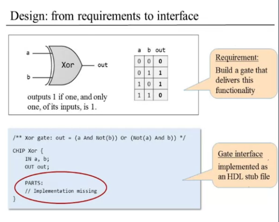
這個實現可以透過真值表來推斷，比如
Xor = (a AND Not(b)) Or (b AND Not(a))
所以如果我們要實現他的話，則可以用這樣的程式語言來描述:
CHIP Xor { IN a, b; OUT out; PARTS: Not(in=a, out=nota); Not(in=b, out=notb); And(a=a, b=notb, out=aAndNotb); And(a=nota, b=b, out=notaAndb); Or(a=aAndNotb, b=notaAndb, out=out); }
如果將電路畫出來的話，則 Xor 就是長這個樣子 (方框中間就是 gate implementation, 不對外顯示的黑盒子部份, 也就是我們程式語言要實做的部份)
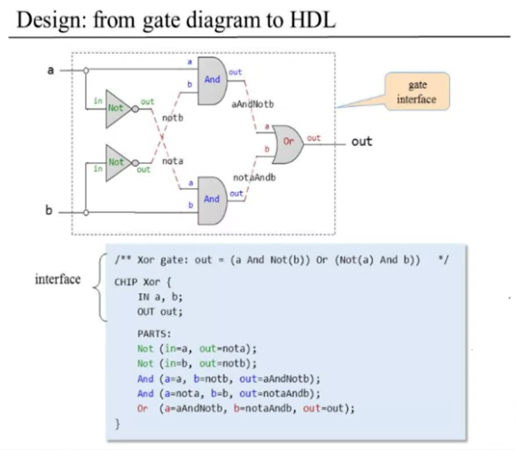
注意到 HDL 和一般程式語言一樣，可讀性很重要，和一般程式語言不同的是它沒有所謂得 procesure，另外，在這邊實做的時候，你需要知道每種晶片的 interface, 比如以下:
Not(in=, out=); And(a=, b=, out=); Or(a=, b=, out=);
想要知道更多這個課程用的 HDL 語言的資訊，可以到以下位址看:
https://www.nand2tetris.org/software/HDL-Survival-Guide.html
1.5: Hardware Simulation
網址: https://www.coursera.org/learn/build-a-computer/lecture/jmAls/unit-1-5-hardware-simulation
這個課程在介紹課程專用的 Hardware Simulator, 可以用來載入這個課程需要用到的 HDL 語言，並執行它。
課程的 Hardware Simulatior 可以一部一部的模擬，需要學會怎樣使用它，這樣在寫作業會比較簡單，注意到程式不支援編輯 HDL 語言，需要使用外部編輯器去修改你的程式。
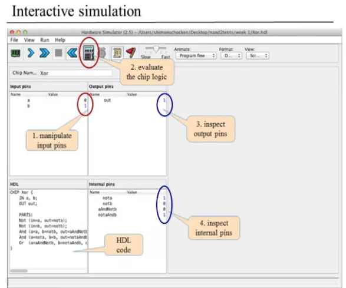
課程有影片介紹整個 Hardware Simulator 的使用，有問題最好回來看。
在專案內的 *.tst 檔案是驗證用腳本，會根據指令設定不同類型的輸入來驗證結果，課程會提供這些腳本，因此我們只要專注在實做我們電路就好。
而 *.out 是產生出來的真值表，你可以透過這個檔案知道你實做的硬體最終會怎樣的輸出。
*.cmp 則是期望的結果，會用來和 *.out 檔案進行比對。
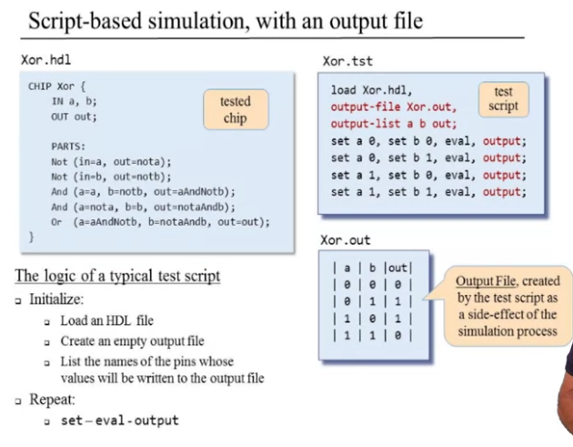
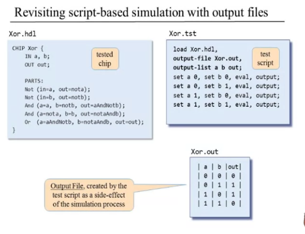
1.6: Multi-Bit Buses
網址: https://www.coursera.org/learn/build-a-computer/lecture/935Ye/unit-1-6-multi-bit-buses
當一次要處理多個 bit 的時候，這種東西我們稱為 bus (a group of bits as a single entity)
如下圖的 a, b, out 都是 16bit bus, 也就是不管輸入輸出都是一個 16bit 的 array
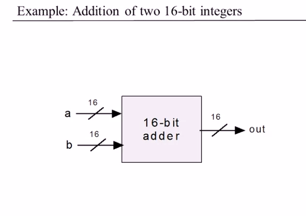
用 HDL 語言描述就是像是這樣
CHIP Add16 { IN a[16], b[16]; OUT out[16]; PARTS: // implement details }
而要怎樣在 HDL 語言裡面連接多 bits 呢，則是這樣做:
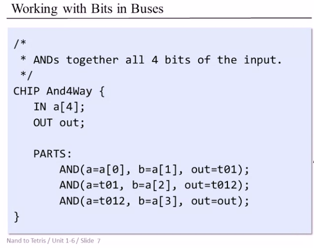
或是
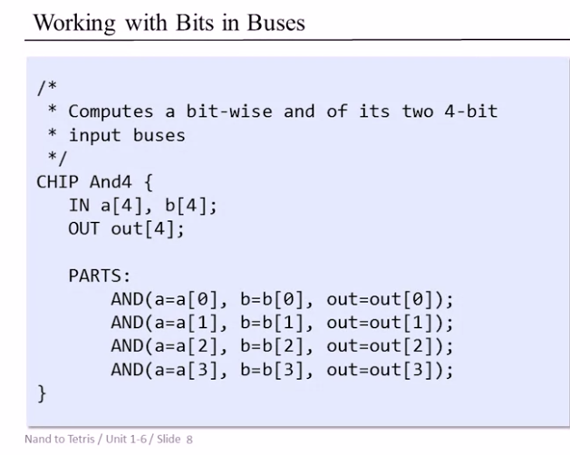
bus 也可以這樣寫成 sub-buses
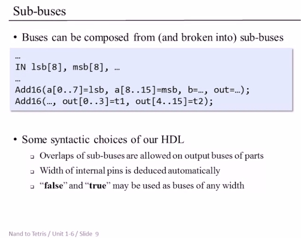
1.7: Project 1 Overview
網址： https://www.coursera.org/learn/build-a-computer/lecture/iyL0J/unit-1-7-project-1-overview
這邊在對第一份作業進行概覽，你可以在 nand2tetris/projects/01 這邊找到他們。
我們會有一個 Nand 邏輯閘是實做好的，你的任務就是用它去實做其他的邏輯電路
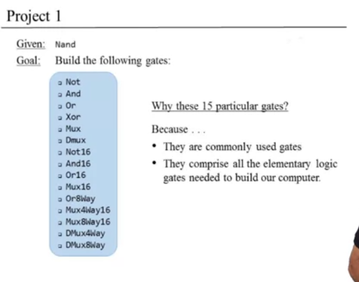
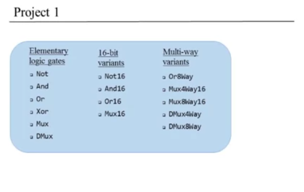
這邊講到 Multiplxor (Mux), Mux 就是一個具有選擇使用哪個輸入作為輸出的電路，你可以從下面的真值表觀察到 Mux 的 sel 會影響到輸出的結果
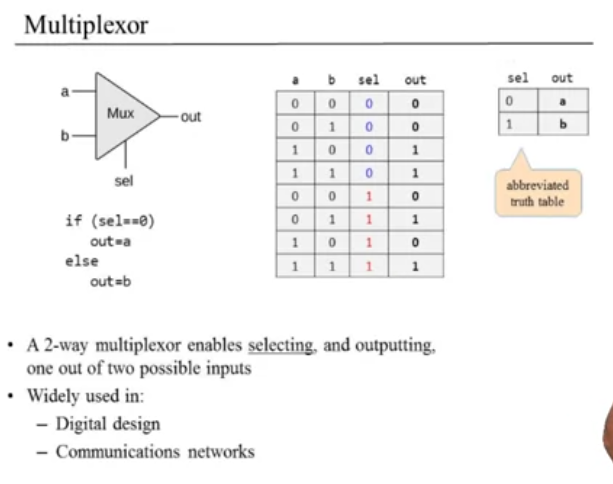
我們可以用 Mux 去實現可程式電路 (programmable gate)
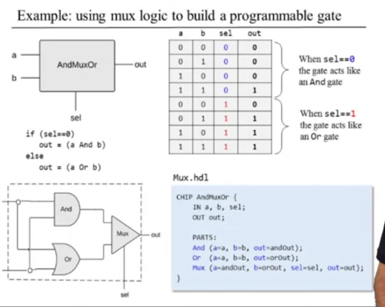
我們該怎樣實現 Mux 呢
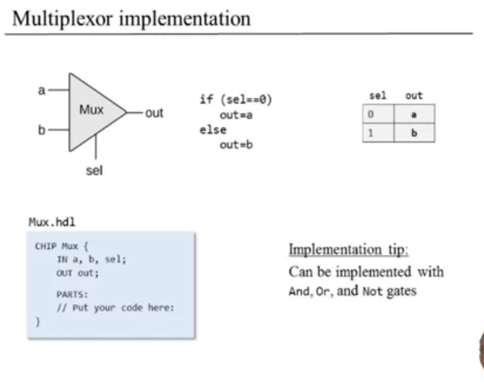
除了 Mux 外，還有 Demultiplexor, 顧名思義其功能就是和 Mux 相反，一樣有一個 sel 腳位可以進行控制，會使一種輸入變成多種輸出結果
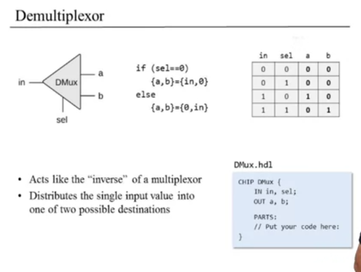
Mux 和 DeMux 在通訊網路上面很常被使用到，
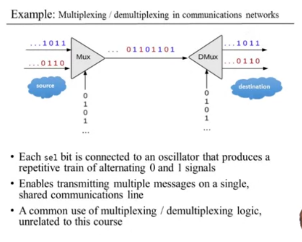
那我們要怎樣實做 And16 的電路呢，他的運算方式是這樣的
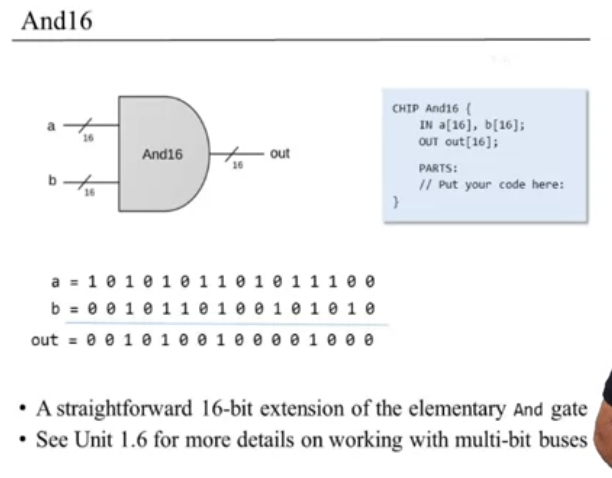
16-bit, 4-way multiplexor 則是這樣
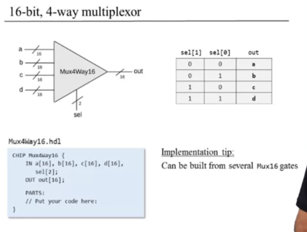
接下來在講怎樣去思考實做 Xor chip，你的實做可以參考 Xor.cmp 的真值表，透過觀察來想要怎樣完成這樣的電路。
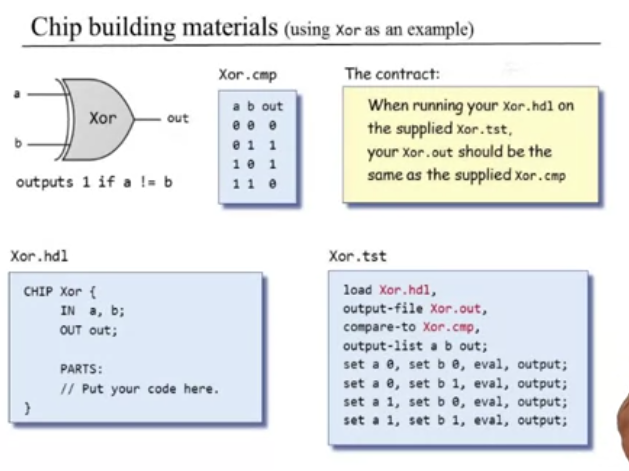
所有的作業都在 nand2tetris/projectes/01 裡面，去實現它並確認都運作正常， Project 01 就完成了。
如果你在使用HDL 語言時候，不知道邏輯閘的使用方式，可以看其 .hdl 檔案或是這邊:
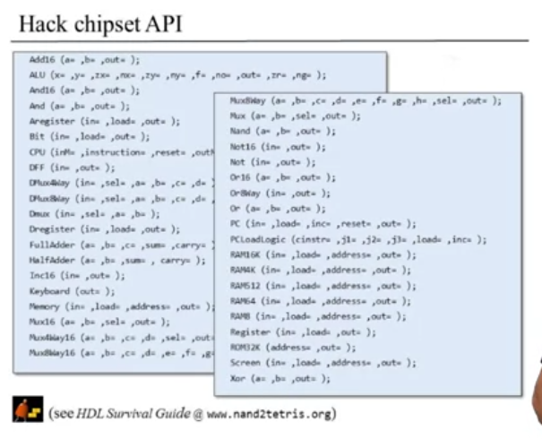
其他要注意的事項:
- 用自己的文字編輯器去修改 *.hdl 檔案
- 任意電路實做無法呼叫自己, 你不能在 AND 實做裡面呼叫 AND
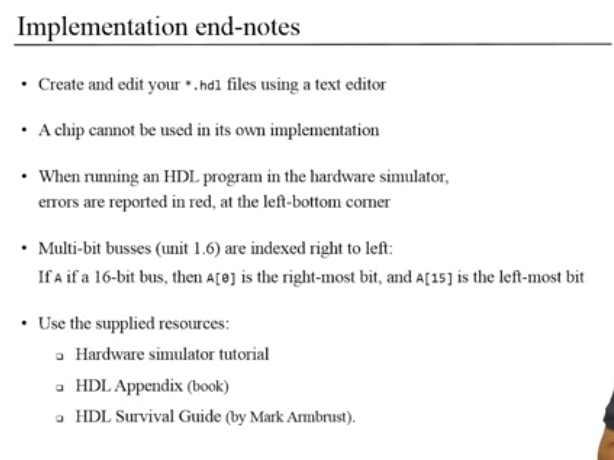
1.8: Perspectives
網址: https://www.coursera.org/learn/build-a-computer/lecture/CNo2D/unit-1-8-perspectives
這邊回顧 Unit 1 的課程，以及回答一些問題, 詳細的 FAQ 可以見 這邊
Q1: 是否可能從不是 NAND 的邏輯閘開始製作電腦 A1: 是可以的，但是 NAND gate 是非常常見 (並且也是萬用) 的
Q2: 我們要怎樣實做一個 NAND Gate A2: 這樣從 Computer Scinece 角度來講了, 詳情去看電子學
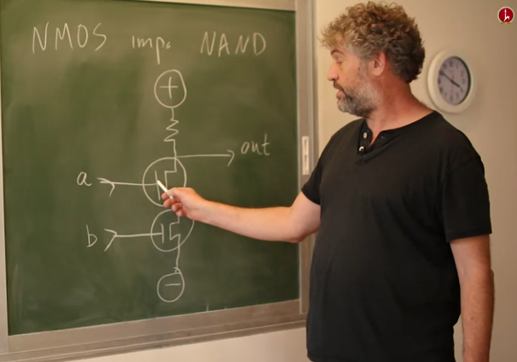
Q3: 課程的 HDL 語言和現實得 verilog 或是 VHDL 有什麼不同 A3: 實務上的 HDL 語言會更加複雜，這個課程用自己的 HDL 語言是為了簡化問題
Q4: 目前實做的晶片都很簡單，怎樣實做複雜的電路 A4: (太複雜了看影片就好)
References
這邊紀錄我為了這個課程參考的其他文獻或是 repo